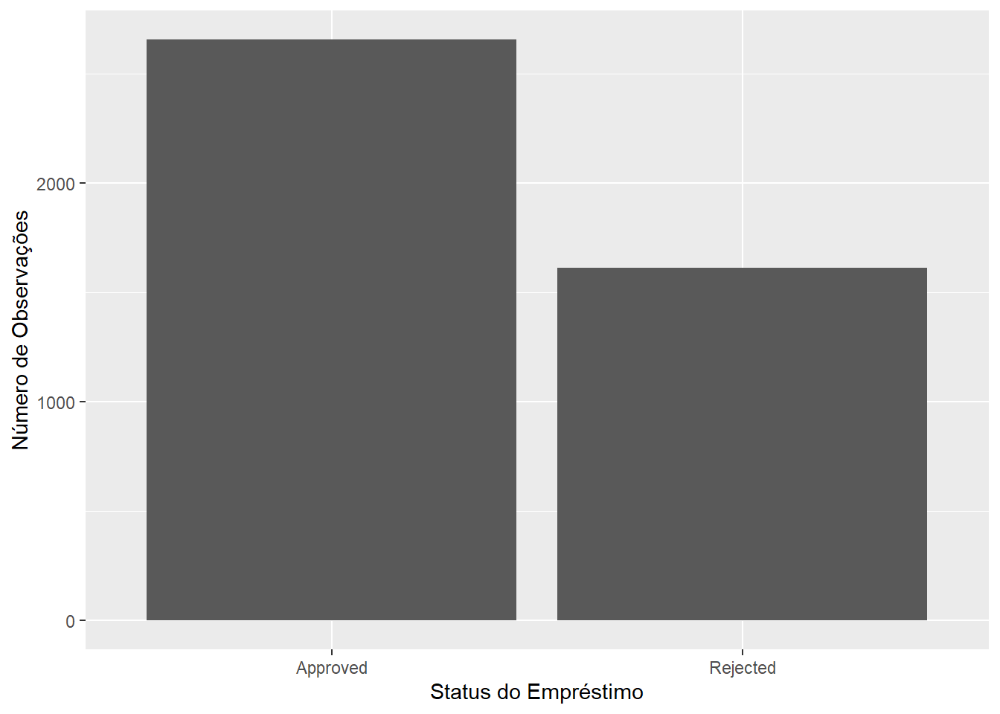
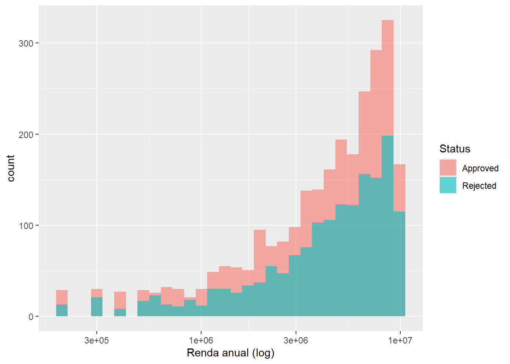
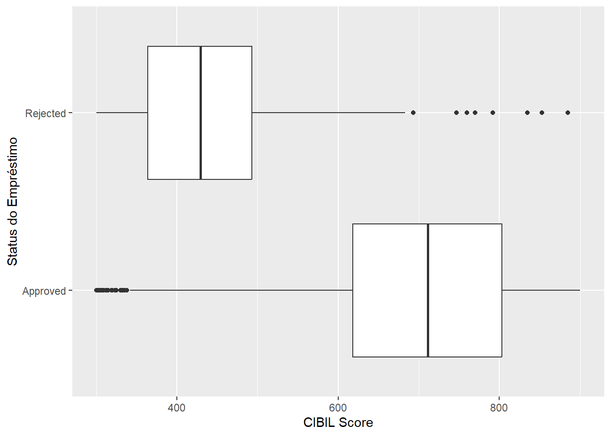
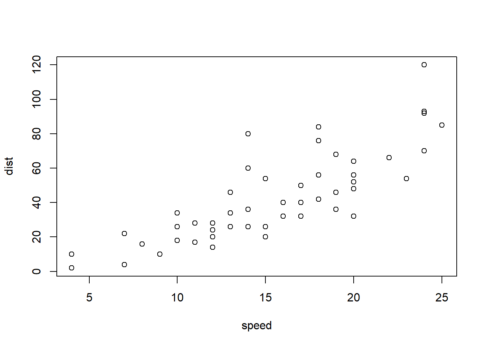

loan |>
count(loan_status) |>
ggplot(aes(x = factor(loan_status), y = n)) +
geom_col() +
labs(
x = "Status do Empréstimo",
y = "Número de Observações"
)
Parágrafos iniciais devem descrever o problema a ser estudado, com referências sobre estudos já realizados na área.
Introduzir um parágrafo com a motivação do trabalho.
Parágrafos finais devem abordar o objetivo do trabalho, de forma resumida, e indicar as técnicas Estatísticas/Computacionais que serão utilizadas para a resolução do problema.
Último parágrafo: Este trabalho está assim organizado: Na Seção 2 apresentamos…. A Seção 3 trata de…
Sugestão de tópicos:
Este capítulo apresenta os principais conceitos, teorias e estudos que fundamentam a pesquisa, servindo de base para a análise e interpretação dos resultados.
Aqui entra o dataset como aplicação, não como foco teórico.
A base de dados utilizada neste estudo representa um conjunto de solicitações reais de empréstimos, contendo informações financeiras, patrimoniais e socioeconômicas dos solicitantes. Cada observação corresponde a um indivíduo, e o objetivo principal da variável resposta (loan_status) é indicar a aprovação ou rejeição do crédito. A Tabela 1 apresenta uma descrição detalhada das variáveis presentes no conjunto de dados.
| Feature | Descrição |
|--------------------------|-------------------------------------------------|
| No_of_dependents | Número de dependentes do solicitante |
| Education | Nível de escolaridade (Graduate / Not Graduate) |
| Self_employed | Autônomo (Yes / No) |
| Income_annum | Renda anual |
| Loan_amount | Valor do empréstimo |
| Loan_term | Prazo em anos |
| Cibil_score | Score de crédito |
| Residential_assets_value | Bens residenciais |
| Commercial_assets_value | Bens comerciais |
| Luxury_assets_value | Bens de luxo |
| Bank_asset_value | Ativos bancários |
| Loan_status | Variável alvo (0/1) |-Regressão logística frequentista -Regressão logística bayesiana (e deixa uma subseção “Modelos adicionais”, caso queira)
A análise exploratória tem como finalidade compreender a estrutura dos dados, identificar padrões gerais, possíveis assimetrias, outliers e relações preliminares entre variáveis.
O conjunto de dados é composto por 614 observações e 13 variáveis, incluindo a variável resposta loan_status, que indica se o empréstimo foi aprovado ou rejeitado. As variáveis preditoras incluem informações como renda anual, pontuação de crédito (CIBIL score), nível educacional, entre outras características dos solicitantes.
A Tabela Tabela 2 apresenta as principais estatísticas descritivas das variáveis numéricas do conjunto de dados, incluindo média, mediana, valor mínimo e máximo. Observa-se que as variáveis relacionadas a valores monetários, como income_annum, loan_amount e asset values, apresentam elevada magnitude e forte dispersão, sugerindo uma distribuição assimétrica à direita, característica comum em dados financeiros.
'------------------------ ------------- ---------- ------- ----------\nno_of_dependents 2.5 3 0 5\nincome_annum 5.05912e+06 5.1e+06 200000 9.9e+06\nloan_amount 1.51335e+07 1.45e+07 300000 3.95e+07\nloan_term 10.9 10 2 20\ncibil_score 599.94 600 300 900\nresidential_assets_value 7.47262e+06 5.6e+06 -100000 2.91e+07\ncommercial_assets_value 4.97316e+06 3.7e+06 0 1.94e+07\nluxury_assets_value 1.51263e+07 1.46e+07 300000 3.92e+07\nbank_asset_value 4.97669e+06 4.6e+06 0 1.47e+07\n------------------------ ------------- ---------- ------- ----------'loan |>
count(loan_status) |>
ggplot(aes(x = factor(loan_status), y = n)) +
geom_col() +
labs(
x = "Status do Empréstimo",
y = "Número de Observações"
)
loan |>
count(education, loan_status) |>
group_by(education) |>
mutate(rate = n / sum(n))# A tibble: 4 × 4
# Groups: education [2]
education loan_status n rate
<chr> <chr> <int> <dbl>
1 Graduate Approved 1339 0.625
2 Graduate Rejected 805 0.375
3 Not Graduate Approved 1317 0.620
4 Not Graduate Rejected 808 0.380loan |>
ggplot(aes(x = income_annum, fill = factor(loan_status))) +
geom_histogram(bins = 30, alpha = 0.6, position = "identity") +
scale_x_log10() +
labs(
x = "Renda anual (log)",
fill = "Status"
)
loan |>
ggplot(aes(x = cibil_score, y = factor(loan_status))) +
geom_boxplot() +
labs(
x = "CIBIL Score",
y = "Status do Empréstimo"
) 
… Os resultados da análise exploratória indicam que variáveis relacionadas à renda, pontuação de crédito e nível educacional apresentam associação com a decisão de aprovação do empréstimo. Observa-se, em particular, que maiores valores de CIBIL score e renda anual estão associados a maiores taxas de aprovação, sugerindo que essas variáveis serão relevantes na etapa de modelagem.
plot(cars)
Aqui você compara abordagens, não modelos apenas.
Diferenças conceituais observadas Robustez dos resultados Interpretabilidade Incerteza Aplicabilidade prática
A discussão tem como objetivo interpretar os resultados apresentados no capítulo anterior, relacionando-os com o referencial teórico e os estudos revisados.
Os achados deste estudo corroboram parcialmente os resultados de (autor2019?), ao indicar que ______________________________________. Por outro lado, diferem dos resultados apresentados por (autor2022?) no que se refere a ________________________________________________.
As implicações teóricas e práticas desses resultados são discutidas à luz da literatura existente.
Síntese dos resultados Quando usar frequentista vs bayesiano Limitações Trabalhos futuros
Breve explicação do problema, com principais resultados e propostas futuras Este é um texto normal e este é no meio do parágrafo.